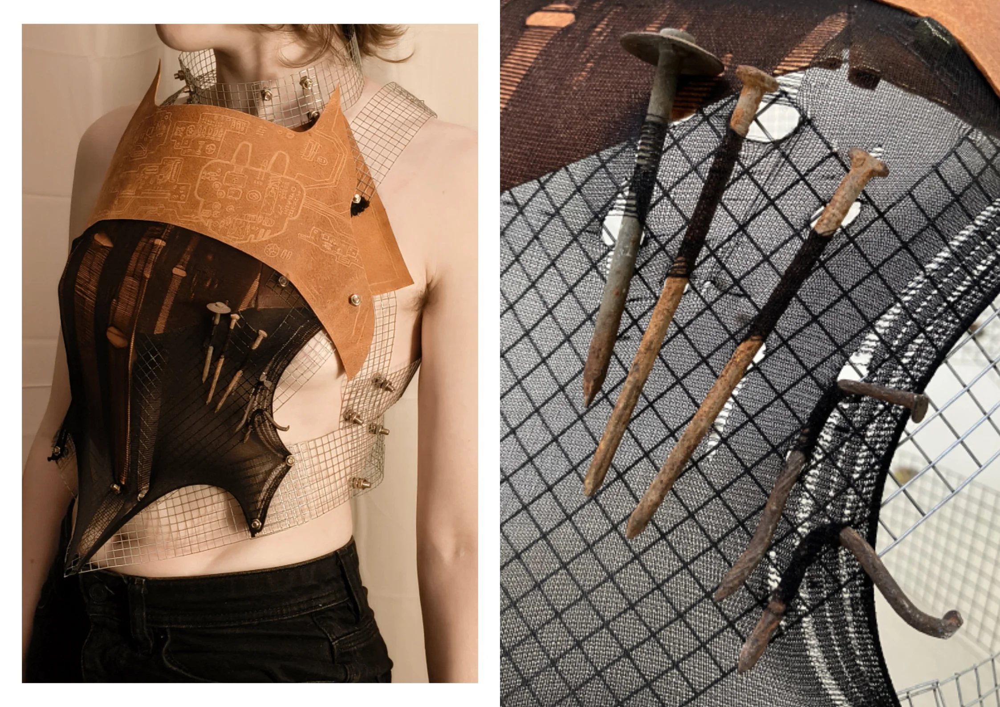
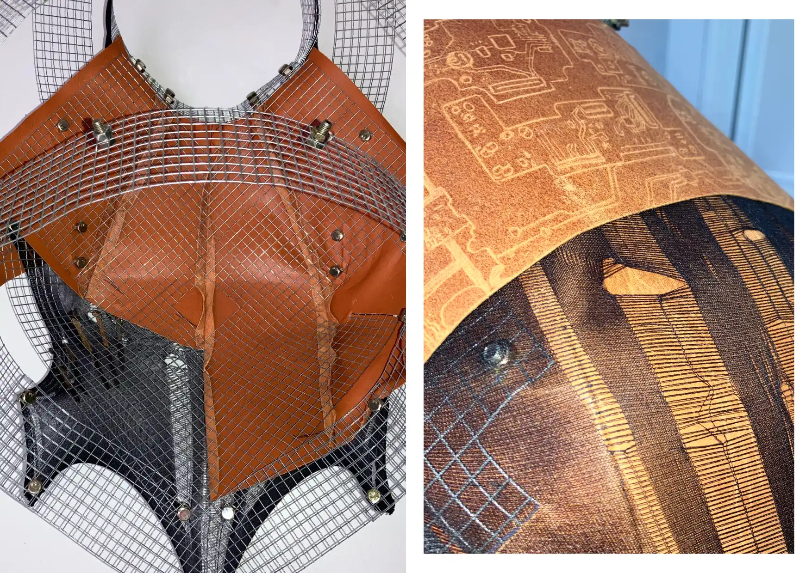
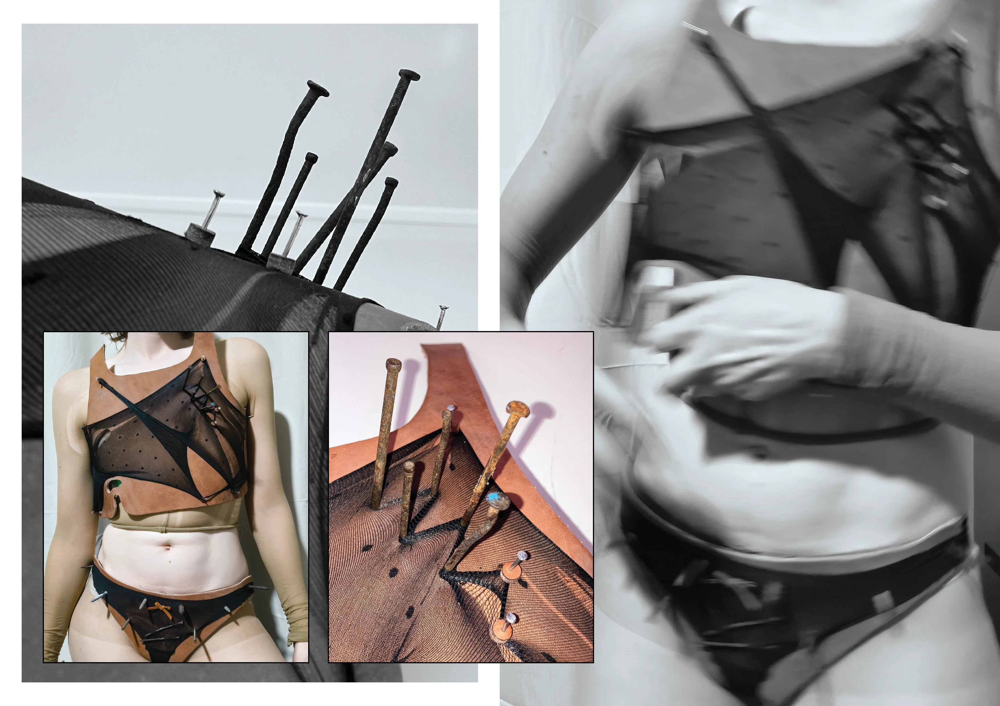
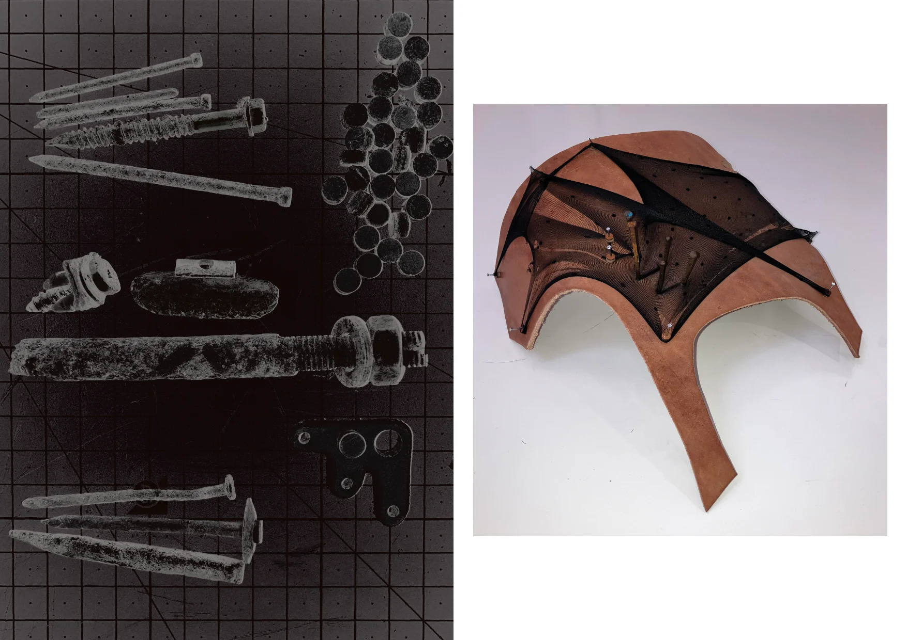
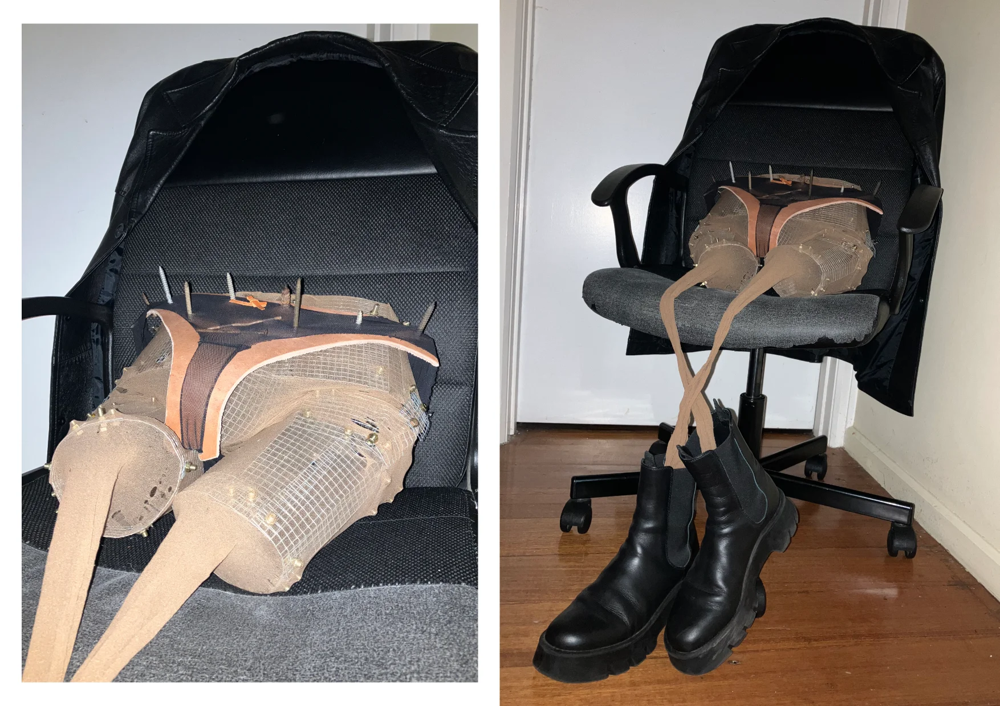
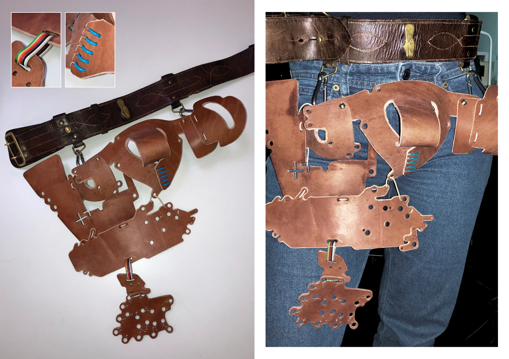
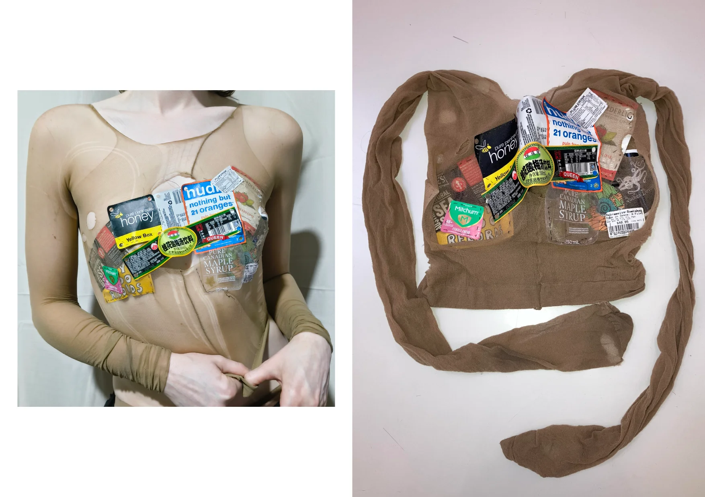
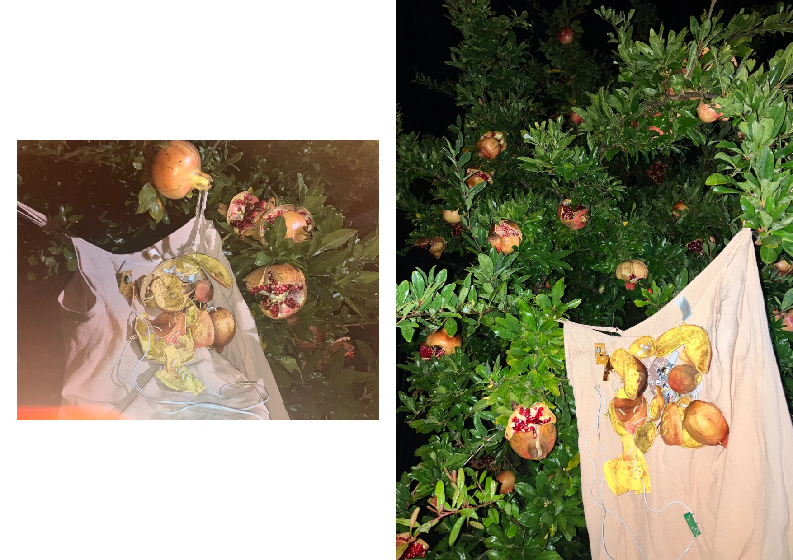

Throughout the first half of my Honours degree I experimented freely with wire, leather, tights, pomegranate skins, and found objects such as rusty nails and stickers. Select photography by Iz Butcher.







